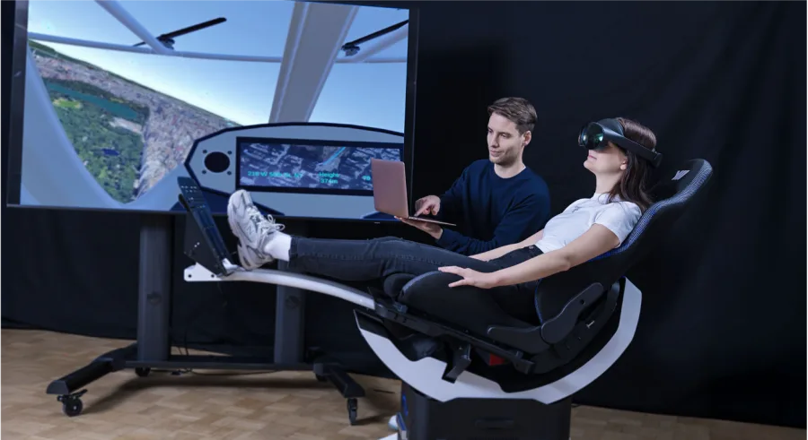
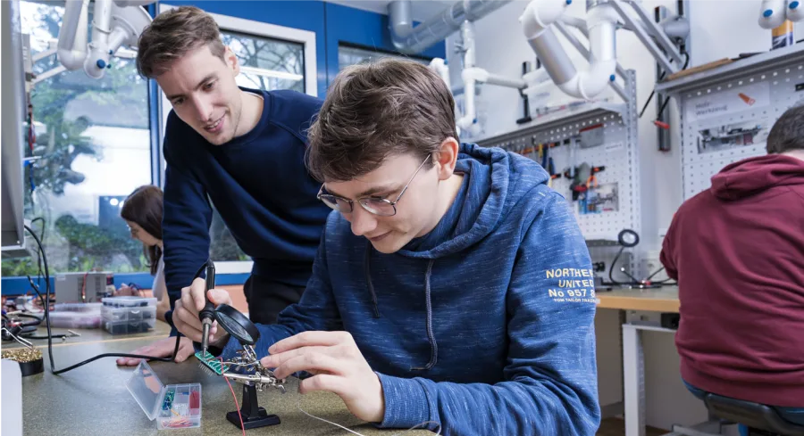
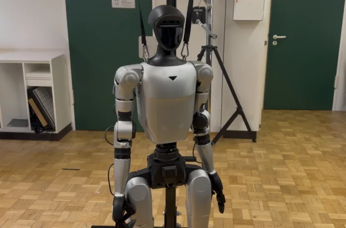
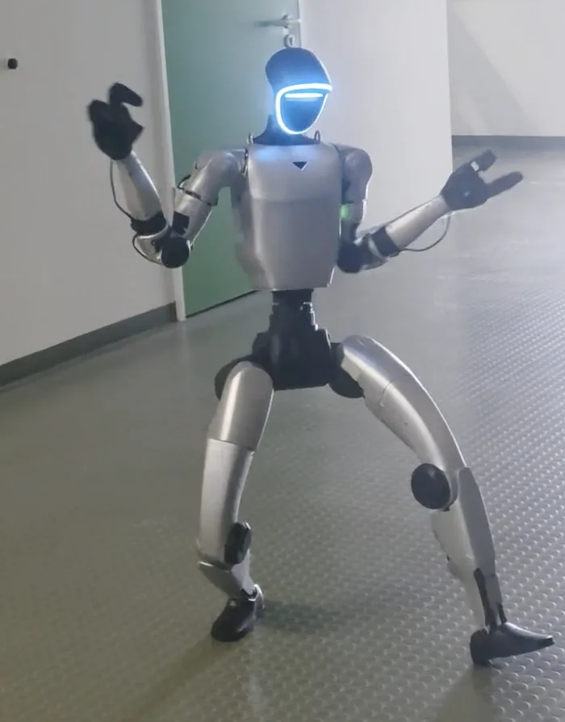
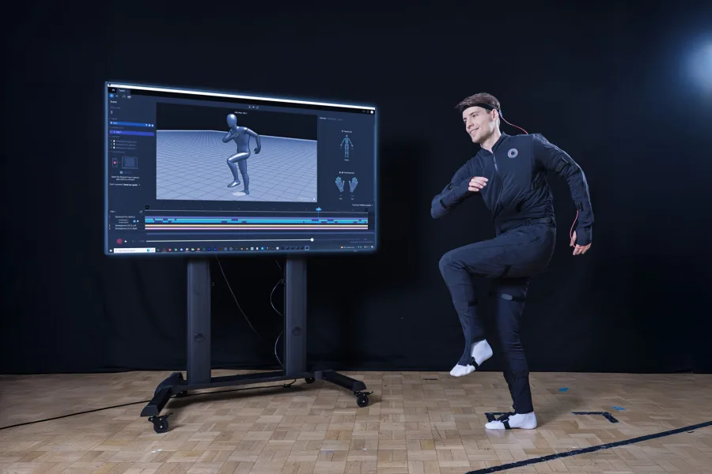
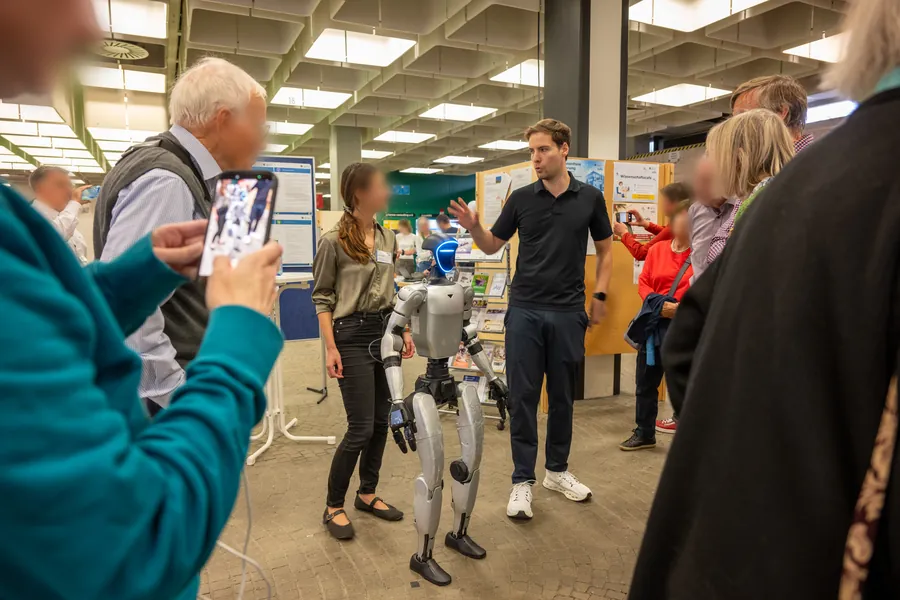
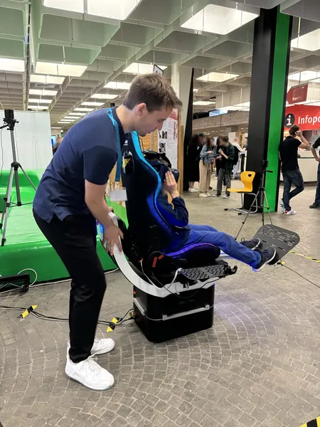
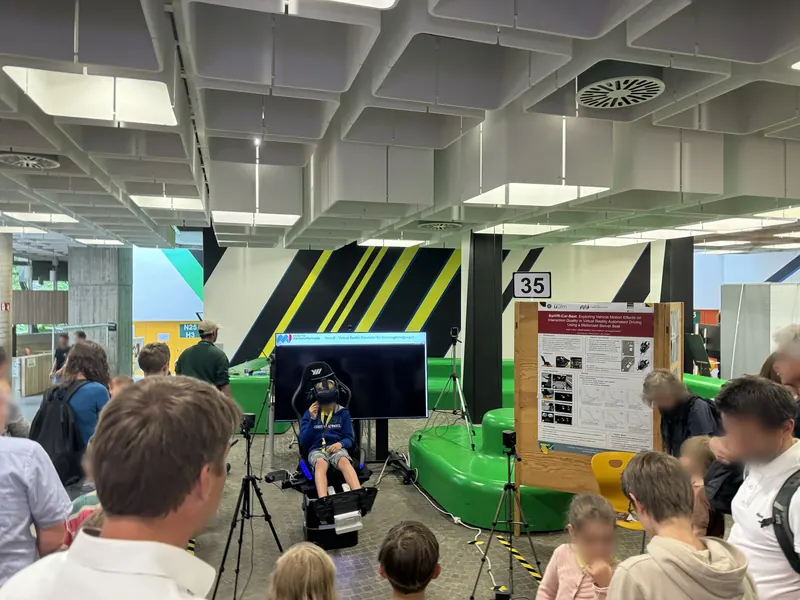

I teach HCI as a research-led practice in which students design, implement, and evaluate interactive systems, moving from concepts to prototypes, empirical studies, and defensible design arguments.
Student Theses and Supervision
I supervise Bachelor’s and Master’s theses in adaptive interfaces, human-in-the-loop optimization, automotive user interfaces, XR systems, and human-robot interaction.
Students I supervised have co-authored papers at CHI and MUM, including AutoVis, OptiCarVis, MIRAGE, and AirClick.
For current thesis topics and collaboration directions, see Collaboration.





Lectures and Courses
Automotive User Interfaces and Interactive Vehicle Applications
This lecture and exercise course teaches automotive HCI, including driver-vehicle cooperation, multimodal interaction, interface design, evaluation, automation, and safety in future mobility.
I was accompanying lecturer for the exercises, led weekly Unity sessions, contributed lectures on future mobility, and developed course materials and the topical direction.
User Interface Software Technologies
This hands-on course introduced software and notation foundations for building interactive systems and translating HCI concepts into implementable interfaces.
I led weekly hands-on lectures, developed teaching materials, and guided practical exercises on interface design and implementation.
Technical Foundations of Media Development
This blended-learning module teaches the technical and HCI foundations needed to design interactive learning applications, including digital media, interaction paradigms, human-centered design, UI guidelines, and screen design.
I co-organized the module, supervised students, and taught UI design, Figma prototyping, and responsible AI-supported UI ideation.
Research Trends in Media Informatics
This seminar surveys current HCI research directions in media informatics, including VR/AR, eye-based interaction, speech interfaces, automotive UIs, and games research.
I co-organized the seminar, advised students on literature reviews and PRISMA-based research synthesis, and assessed papers, presentations, and research proposals.
Design Thinking for Interactive Systems
This project course teaches design thinking for interactive systems, with student teams moving from empathy and ideation to prototypes, tests, project websites, and demo videos.
I advised student teams, helped shape feasible interaction concepts, and supervised implementation and evaluation work.
Outreach
I present our research at public events, where visitors of all ages try our systems hands-on, including Ulm University’s Long Evening of Science in 2024, 2025, and 2026, the Bildungsmesse Ulm 2025, and the Autumn Academy 2026.



Invited Talks and Guest Lectures
- Low-Cost High Fidelity Simulators for Interaction with Future Mobility
- From One-Size-Fits-All to Preference-Based Interactions with Technology
- Ubiquitous Personalization